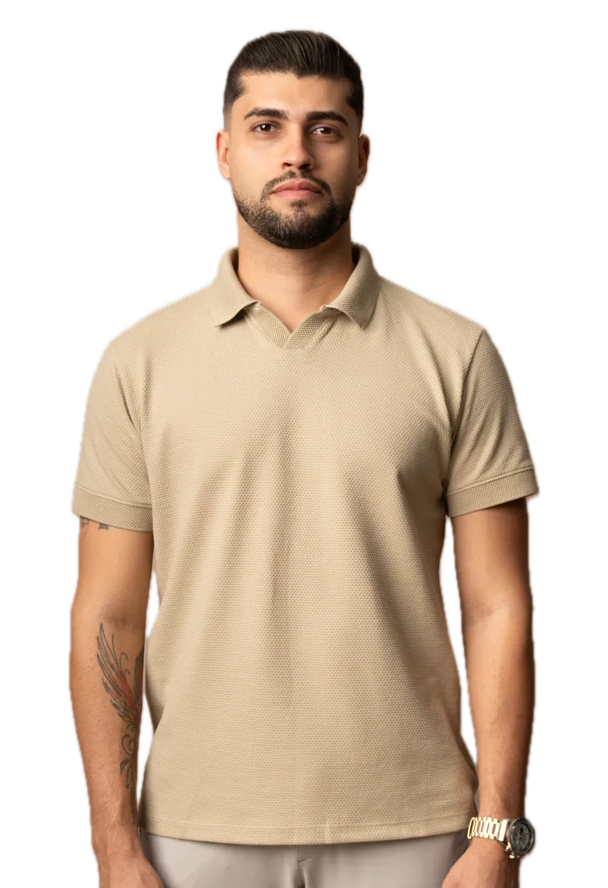
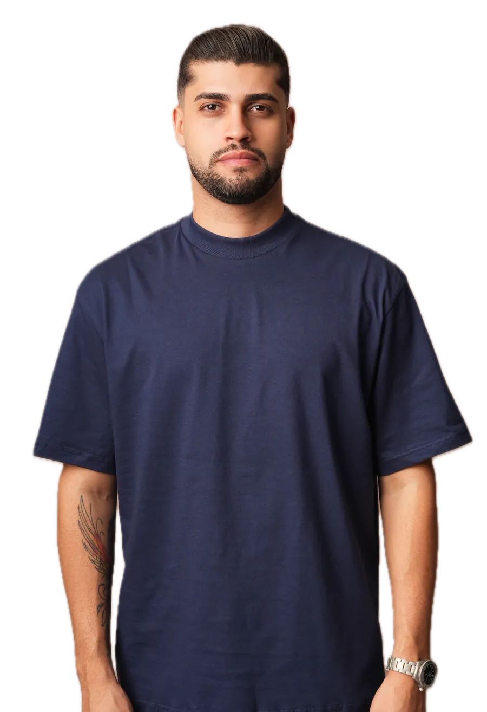

01
Você escolhe o caminho
Duas vias
São dois: personalizar peça de pronta entrega com a sua marca, ou desenvolver coleção do zero, com tecido, modelagem e ficha técnica.

Produção própria de roupa masculina para o lojista que quer vender marca própria, não o mesmo produto do vizinho.
Coleção nova com a condição dela junto, direto de quem produz.
01O modelo
É assim que o modelo de revenda funciona: a peça chega pronta, com a marca de outra empresa e o preço sugerido junto. O caminho que trouxe essa peça até a sua loja é o mesmo que a leva para todas as outras.
Quando o produto é igual, o que sobra para disputar é desconto.

Com a sua marca na peça, preço, margem e cliente deixam de depender de fornecedor.
Entrar no grupo→Mais de 1.500 marcas já produziram nesta fábrica.
02A troca
Quando a marca é sua, a reputação da peça também é.
Como ela chega hoje
Como ela sai da MR
Chega com a marca de outra empresa.
Sai com a sua marca.
O preço vem sugerido junto da mercadoria.
O preço é você quem define.
Quem gostou procura a marca de quem fabricou.
Quem gostou procura a sua marca.

Prazo de produção
10 dias
úteis, a partir da aprovação da arte
Pedido mínimo
12 peças
por cor, em DTF ou bordado
24 por cor quando a aplicação é em alto relevo
Mais de 1.500 marcas já produziram nesta fábrica.
Vale para peça de pronta entrega personalizada com a sua marca. Coleção desenvolvida do zero, com tecido escolhido, modelagem própria e ficha técnica, segue outro caminho, e o prazo e o pedido mínimo dela são definidos no projeto.
03O caminho
Um prazo só, e você sabe de onde ele começa a contar antes de aprovar a arte.
São dois: personalizar peça de pronta entrega com a sua marca, ou desenvolver coleção do zero, com tecido, modelagem e ficha técnica.
Enquanto a arte não estiver aprovada, ela ainda pode mudar. Depois que ela é aprovada, a produção roda com o que foi aprovado, e é daqui que o prazo começa a contar.
São 10 dias úteis de produção da peça de pronta entrega personalizada, contados da aprovação da arte. Produção, estampa e embalagem saem da mesma estrutura.
O lote fica pronto com a identidade da sua marca aplicada, no acabamento que foi aprovado no passo dois.

Linha de coleção · mr Inverno 2026
O que a MR faz está nomeado: tecido e modelagem, produção, estampa, embalagem e apoio de coleção. Esses são os entregáveis nomeados nesta página. O que não estiver aqui é conversa de projeto, não promessa.
Entrar no grupo→Mais de 1.500 marcas já produziram nesta fábrica.
04O grupo
Em grupo do WhatsApp, os outros participantes veem o seu número.
Comece pelo grupo. É de lá que sai a coleção nova, com a condição dela junto.
Entrar no grupo→